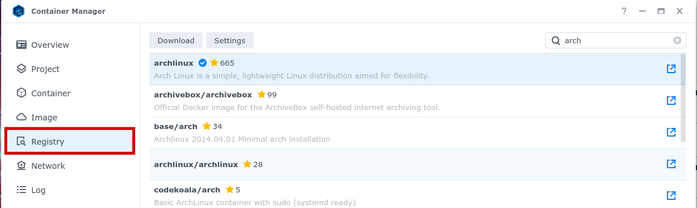
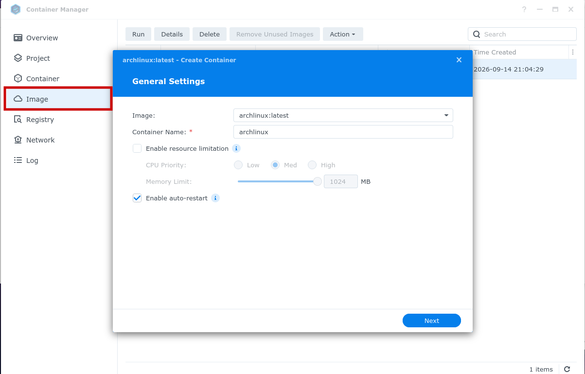
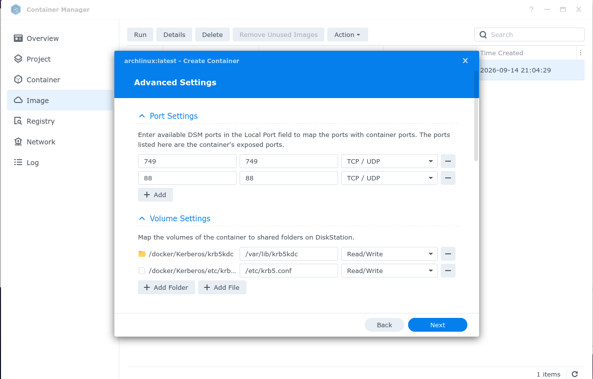
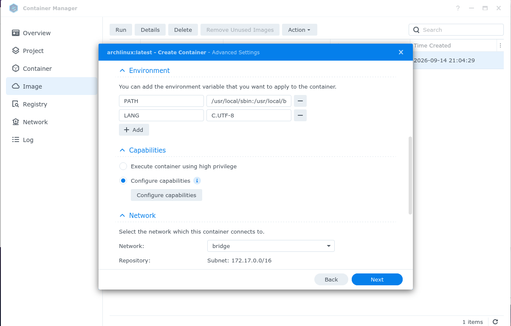
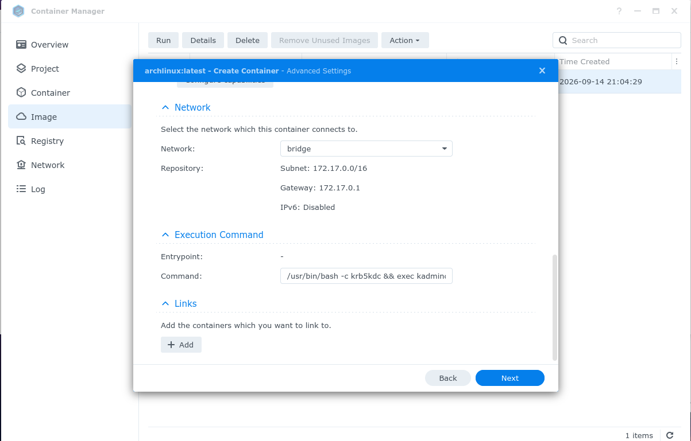
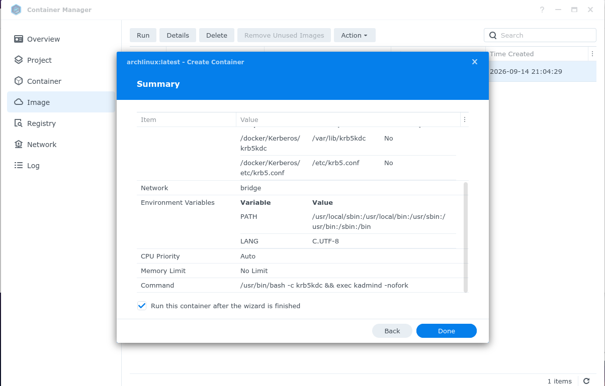
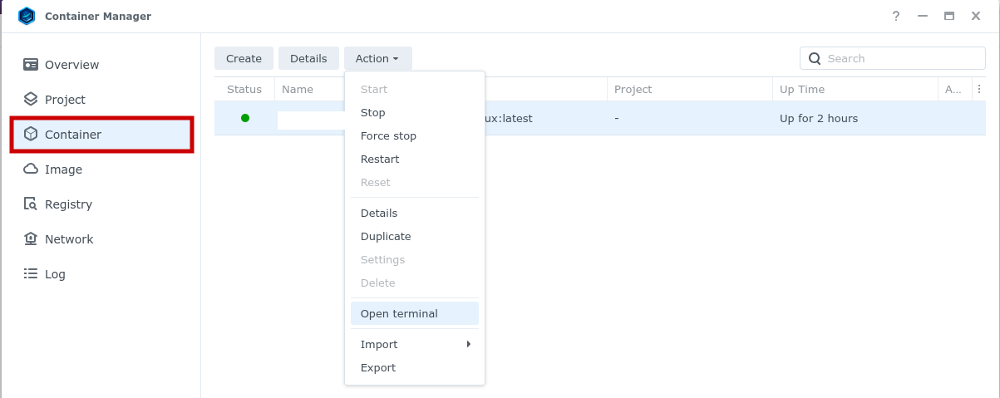

Running Kerberos KDC in a container on Synology NAS
Posted by Jordi Warmenhoven in Blog
In a previous post I described how to run Kerberos KDC (Key Distribution Center) on a Linux desktop client for authentication. The KDC was used to let this same client access NSF shares on a Synology NAS. This worked fine when the Linux desktop was the only client using the Kerberos authentication, since shutting down the Linux desktop makes the KDC unavailable for authentication. Recently I started using a laptop with Linux and also wanted to access the NFS shares from there. Of course I could start up the desktop with KDC each time I use the laptop at home, but that is rather impractical and a waste of energy. Solution: running a lightweight container with Kerberos KDC on the Synology NAS itself. This blogpost will describe how to do that.
Required:
- Container Manager application on your Synology NAS.
- Linux docker image. I use a lightweight Arch Linux image.
-
Install Container Manager application in Package Center on your Synology NAS.
-
Download Docker imager.
Open Container Manager. Search and download the Arch Linux image (tag: latest) under Registry.
-
Create container.
With the image selected, click on Run. This will start the creation of the container. Enable auto-restart. The Kerberos processes do not take many system resources, so no need to limit these here.
-
Map container volumes
Map ports 88 (Kerberos) and 749 (database admin tool). Map the indicated volumes from the image to a local share in order to make the database and configuration persistent between image updates/restarts. Access to mapped folders/files on your NAS should be limited to docker_user and admin.
-
Accept default values for Environment, Capabilities and Network.

-
Set container startup command
The following works as a startup command for the container:
/usr/bin/bash -c krb5kdc && exec kadmind -nofork
This makes sure that the Kerberos Key Distribution Center and the Administration Daemon are started when the container is launched.
-
Continue and run the container.

-
Configure Kerberos.
Open a terminal in the container. (create a new one)
Create and configure the Kerberos principal database. Configure the Realm in both client and KDC.
Comments